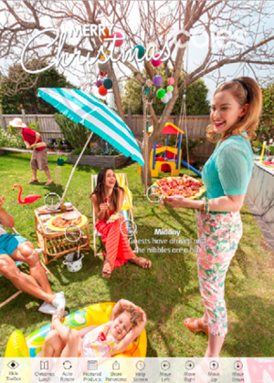

Coles Supermarket - Discover Xmas Special. CLICK TO VIEW (WEB)
HOME
360˚ Photography
About
Red Square provides 360˚ Panoramic services to a range of clients including University of Tasmania (UTAS). madebyfairfax and the French cruising company, PONANT
Click to view the PONANT Street View 360˚ panoramas

PONANT Street View Photospheres: Waisisi Bay - Beach Landing
UNIVERSITY OF TASMANIA - iPAD & ANDROID VIRTUAL REALITY APP

The UTAS VR App was developed for the International Marketing & Communication division with the purpose of providing recruitment support at trade show and fairs around the world. Using Google Cardboard head mounted displays the application would provide glimpses of life on campus and around Tasmania.
The App is designed for use with a HMD (head mounted display) or
without a headset on a mobile device. The VR section has optional
settings for Google Cardboard/V2, Gear VR, Homidio, VR One,
ViewMaster and Color Cross. A web version is available at

GATEWAY VIRTUAL TOUR - WEB
Working with the 'madebyfairfax' agency I provided both photographic, design and development services to create a virtual tour of the Dexus Gateway Building and related buildings in the Circular Quay area of Sydney.
In this project I provided site appraisal, photography and retouching services as well as working closely with the agency to develop an interface and user experience within a bespoke virtual tour. The client developed a website that the virtual tour formed an integral part of and I worked closely with them on the final development of the site. The integrated tour can be viewed at: http://www.gatewaytower.com.au/
A standalone version is online at: http: //tonyredhead.photography/360 /SOCIAL /Gateway/Gateway_VT-Test/
OLDER PROJECTS
Coles Supermarket - Discover Xmas Special. CLICK TO VIEW (WEB)
MCA Anish Kapoor Exhibition - iPad App CLICK TO VIEW (APP STORE)
Ansto 60 Years of Discover - iPad App CLICK TO VIEW (APP STORE)
Cosmos Magazine - Red Planet Mars
INTERACTIVE IPAD TRAVEL/EVENT JOURNALS
YPO.org - "Gold Rush"
CEO.org - "Borneo College"
Founded in 1995, by Tony Redhead and Kelly Burke, Red Square was one of Australia's first internet agencies. Red Square had a solid and reliable industry reputation for developing innovative and integrated Internet solutions for some of Australia's largest corporate brands and identities.
In 2008 Red Square’s business merged with local agency Webqem to allow Tony to explore his interest in Digital Imaging and 360˚ Panoramic Photography.
In 2011 Tony joined the fledgling Adobe Digital Publishing Suite beta program, and recognizing the opportunities afforded by the technology to combine his passion for Digital Imaging, Photography and Design, he quickly moved into development of his first tablet applications.
Tony was recognised in the Australian Mobile Awards for his work in developing the award winning Sky-OneCentral Park and Experience the Highs apps and his photographic contribution to the MCA Anish Kapoor app.
In 2015 Red Square relocated to Adelaide and will continue to provide a range of 360˚ photographic services including Photography, Virtual Tours and iOS and Android Applications.
(61) 438 501002
93 Maud Street, Adelaide, South Australia, 5061
Looking for something?